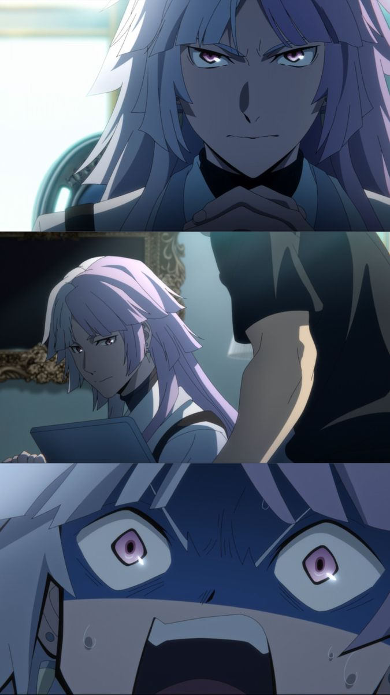
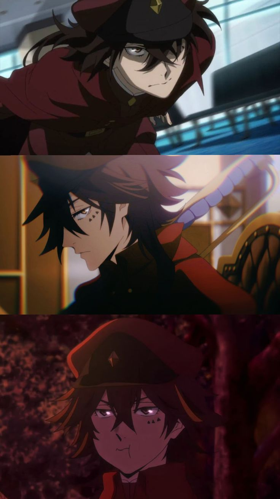

Mikoshiba Seijyuurou 御子柴清十郎
能力名：不明，能透過觸摸某人，將「對方最想知道的情報」與「自己最想知道的情報」交換。「天人五衰」的成員。本名不詳，天空賭場的總經理，視賭場如同自己的生命。

Shiina Asahi椎名旭
能力名：外套，能將斗篷的布面與最遠30公尺範圍內的空間連結起來。「天人五衰」的成員，通稱「小丑」。穿著魔術師套裝，右臉上戴著半個面具，性格瘋狂的殺人鬼。

Kirishima Ikuya 桐嶋郁彌
能力名：雪中梅，能將劍刃自由伸縮及彎曲來進行攻擊。「獵犬」隊員。

Shigino Kisumi 鴫野貴澄
能力名：仲冬的遺物，操縱金屬的能力。「港區黑幫」武鬥派「黑蜥蝪」十人長。真實身分是「獵犬」隊員，被派往「港區黑幫」臥底。貼著OK繃的少年。